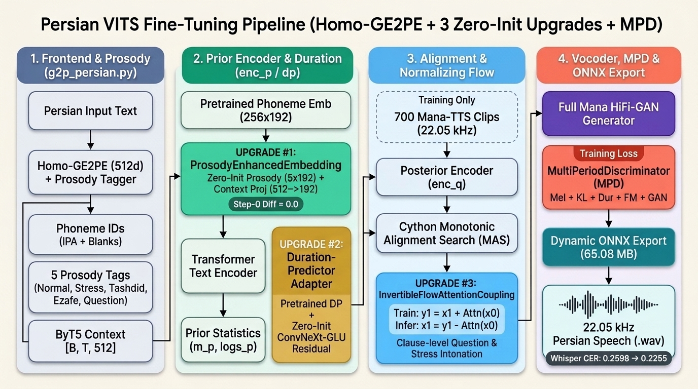
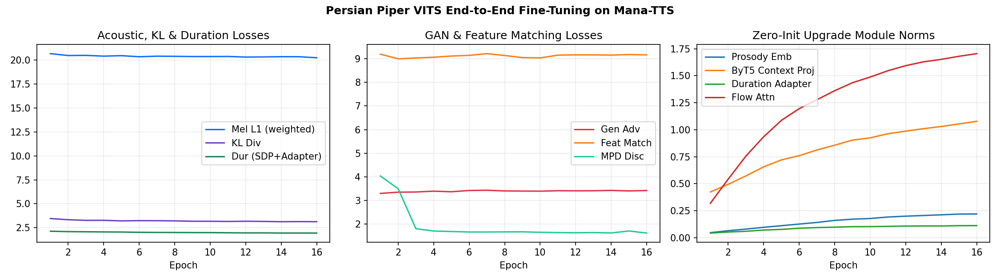
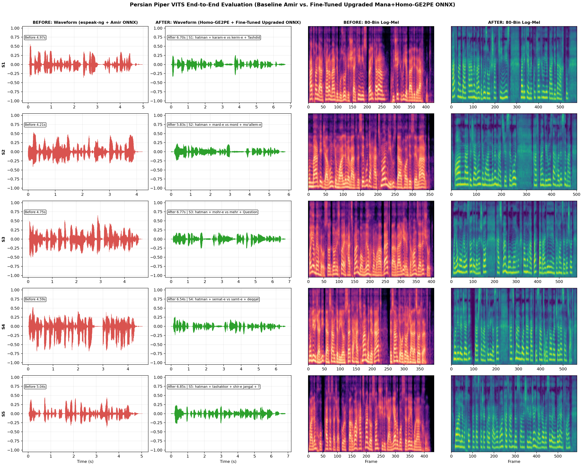

Persian Piper / VITS + Homo-GE2PE & Neural Upgrades
End-to-end VITS + MultiPeriodDiscriminator (MPD) fine-tuning on 700 studio Persian clips from
MahtaFetrat/Mana-TTS with 3 zero-initialized architectural upgrades and dynamic ONNX export.
CUDA T4 · 16 Epochs · 700 Clips
Step-0 Diff = 0.0
Homo-GE2PE (512d) + Stress/Tashdid/Ezafe/Question
Dynamic ONNX: 65.08 MB
Mean Whisper CER: 0.2598 → 0.2255 (−13.2%)
Complete Pipeline Architecture

Click image to open full resolution. Combines Homo-GE2PE (512d) + 5-tag Persian Prosody Stream,
zero-initialized ProsodyEnhancedEmbedding, ConvNeXt-GLU DurationPredictorAdapter,
bijective InvertibleFlowAttentionCoupling, Cython MAS, Full Mana HiFi-GAN, and MPD adversarial training.
Combined 5-Sentence Comparison & Ground-Truth Reference
BEFORE (Baseline)
CER 0.2598
espeak-ng + fa_IR-amir-medium
AFTER (Upgraded GPU Model)
CER 0.2255
Homo-GE2PE + persian_vits_upgraded.onnx
Studio Target (Mana-TTS)
Real 22.05 kHz speaker reference clip
Sentence 1 — Tanvin + Homograph (kæræm-e vs kerm-e ) + Tashdid
حتما در کرم مرد بزرگ شکی نیست، ولی کرم کوچک روی برگ درخت بود.
Focus: hatman + karam-e (generosity) vs kerm-e (worm) + shakki (gemination)
BEFORE (4.969s)
CER 0.3261
IPA: hˈatman dˈar kˈaram mˈard bozˈorɡ ʃˈakki nˈist vˈali kˈaram kˈuːtʃak rˈuje bˈarɡ derˈaxt bˈuːd
AFTER (6.699s)
CER 0.1739
IPA: hˈatman dar karˈame mˈarde bozˈorɡ ʃakkˈi nˈist, vˈali kˈerme kutʃˈak rˈuje bˈarɡe derˈaxt bˈud.
Sentence 2 — Homograph (mærd-e vs verb) + Tashdid & Ezafe
آن مرد جوان که معلم مدرسه بود، حتما دیروز در حادثه مرد.
Focus: hatman + mard-e vs mord + mo'allem-e (Tashdid + Ezafe)
BEFORE (4.214s)
CER 0.1667
IPA: ɑn mˈard dʒavˈɑn kˈeː moʔˈallem madrˈese bˈuːd hˈatman dˈiruːz dˈar hˈɑdesˌeː mˈard
AFTER (5.828s)
CER 0.2381
IPA: ˈɑn mˈarde dʒavˈɑn ke moʔallˈeme madresˈe bˈud, hˈatman dirˈuz dar hɑdesˈe mˈard.
Sentence 3 — Homograph (mohr-e vs mehr ) + Tashdid + Question
آیا مهر استاد دانشگاه حتما با مهر و محبت بر برگه امتحان زده شد؟
Focus: hatman + mohr-e (stamp) vs mehr (affection) + mohabbat + Question ?
BEFORE (4.748s)
CER 0.3061
IPA: ˈɑiˈɑ mˈeːhr ˈostɑd dˈɑneʃɡˈɑh hˈatman bɑ mˈeːhr vˈa mohˈabbat bar bˈarɡeː emtˈehɑn zˈadeː ʃˈod
AFTER (6.769s)
CER 0.2245
IPA: ɑjˈɑ mˈohre ostˈɑde dɑneʃɡˈɑh hˈatman bɑ mˈehr vˈa mohabbˈat bˈar bˈarɡeje emtehˈɑn zadˈe ʃˈod?
Sentence 4 — Homograph (semat-e vs samt-e ) + Tashdid
مدیر جدید در سمت ریاست، حتما با دقت به سمت اتاق جلسات رفت.
Focus: hatman + semat-e (role) vs samt-e (direction) + deqqat
BEFORE (4.586s)
CER 0.1364
IPA: mˈodir dʒˈadid dˈar sˈamt rijˈɑsat hˈatman bɑ dˈeq1q1at beː sˈamt ˈotɑːq1 dʒalˈasɑt rˈaft
AFTER (6.536s)
CER 0.2727
IPA: modˈire dʒadˈid dar semˈate rijɑsˈat, hˈatman bɑ dˈeq1q1at be sˈamte otˈɑq1e dʒalasˈɑt rˈaft.
Sentence 5 — Double Ezafe + Tashdid + Interrogative Contour
معلم خوب پس از تشکر فراوان، حتما داستان شیر جنگل را با صدای بلند خواند؟
Focus: hatman + mo'allem-e + tashakkor-e + shir-e jangal + Question ?
BEFORE (5.039s)
CER 0.3636
IPA: moʔˈallem xˈuːb pˈas az taʃˈakkor farˈɑvɑn hˈatman dˈɑstɑn ʃˈir dʒˈanɡal rɑ bɑ sˈedɑjˌeː bˈoland xˈɑnd
AFTER (6.850s)
CER 0.2182
IPA: moʔallˈeme xˈub pˈas az taʃakkˈore farɑvˈɑn, hˈatman dɑstˈɑne ʃˈire dʒanɡˈal rɑ bɑ sedˈɑje bolˈand xˈɑnd?
Training Curves & 80-Bin Log-Mel Spectrograms

Metric
Epoch 1
Epoch 6
Epoch 12
Epoch 16 (Final)
Weighted Mel L1 Loss 20.6856 20.3603 20.3287 20.2546 KL Divergence 3.4510 3.2316 3.1671 3.1206 Duration Loss 2.1264 2.0123 1.9502 1.9336 MPD Discriminator Loss 4.0361 1.6692 1.6363 1.6244 Zero-Init Norms (P / Ctx / DP / Flow) 0.05 / 0.42 / 0.04 / 0.32 0.13 / 0.76 / 0.09 / 1.20 0.20 / 0.99 / 0.11 / 1.59 0.22 / 1.08 / 0.11 / 1.70

Waveform and 80-bin log-mel spectrogram comparison across all 5 evaluation sentences (22.05 kHz).